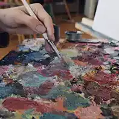
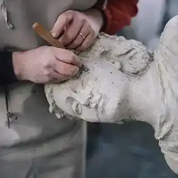
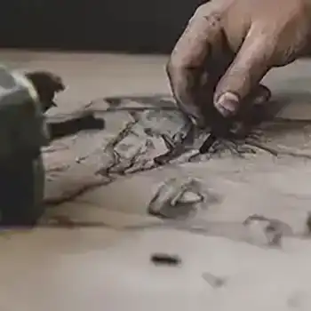
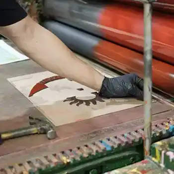
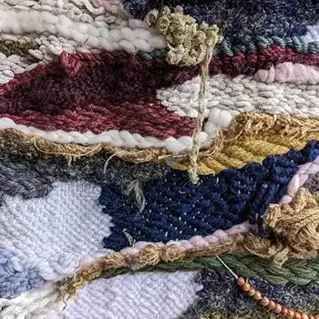
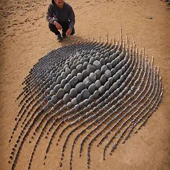

Materials
Art can be created with almost anything. From paint and pencil to clay, fabric, and photography, artists use different materials and mediums to bring their ideas to life. Each medium has its own qualities that can influence how an artwork looks, feels, and communicates.






The materials an artist chooses can become part of the message itself. Texture, color, shape, and process all give an artwork its unique voice. By exploring different mediums, artists can discover new ways to express ideas and communicate without words.